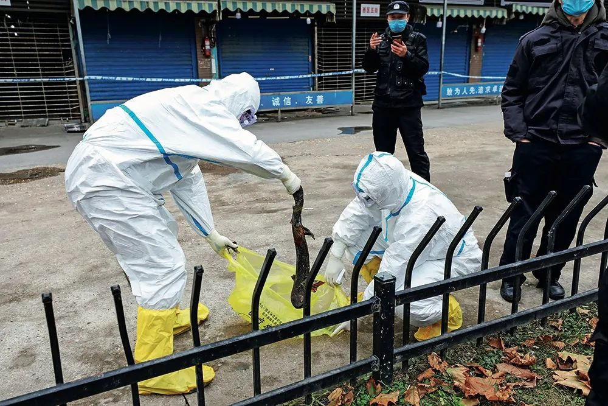
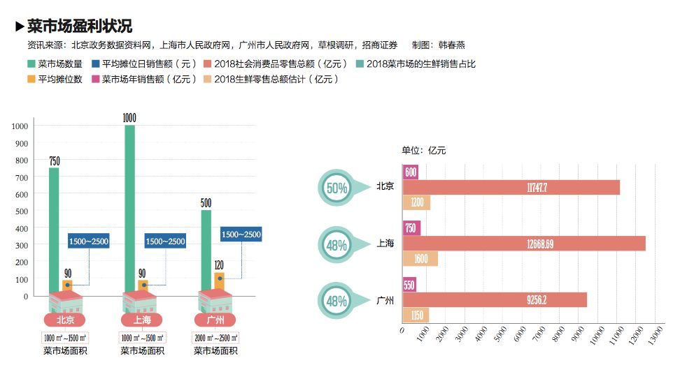

“华南海鲜批发市场西区有十几家贩卖野味的商户”|对话武汉肺炎当事人–专题-中国经营网
原文链接 备份链接 “华南海鲜批发市场西区有十几家贩卖野味的商户”|对话武汉肺炎当事人 2020-01-22 20:16 作者：张家振 陈婷 来源：中国经营网 本报记者 张家振 陈婷 武汉、北京报道 “新型冠状病毒的来源是武汉一家海鲜市场 …

全国还有多少个华南海鲜市场？
农贸市场是否还有存在的必要？


1月27日，武汉华南海鲜市场西区的一处商户门前，工作人员正在抓捕一只逃跑的大鲵(娃娃鱼)。摄影/长江日报 陈卓
生死农贸市场
*本刊记者/姜璇*
*发于2020.3.2总第937期《中国新闻周刊》*
2020年是武汉市国家卫生城市的复审年。
1月16日，武汉市迎来了国家卫健委规划司组织的调研团。这个调研团赴武汉调研的重点内容是，了解城乡环境卫生综合整治、市场环境卫生整治及病媒生物防制等工作。
彼时的武汉华南海鲜批发市场已经处于风口浪尖。2019年12月31日，武汉卫健委通报出现27例新冠肺炎病例的当天，《中国新闻周刊》曾探访华南海鲜市场。
华南海鲜市场地处武汉闹市区，与汉口火车站仅相距一公里，分东西两区，有600多家商户，是个开业多年一直传言即将拆迁的老市场，直到2020年元旦，这个市场才休市整顿。
疫情发生后，不少人担忧全国还有多少个华南海鲜市场？在商超、便利店以及生鲜电商等新型业态持续出现的今天，农贸市场是否还有存在的必要？现实是，在中国数万亿的生鲜交易市场，农贸市场仍是居民的主要生鲜消费渠道，占比超过七成。
“由于地方各级政府的认识不同，农贸市场在规划上不到位，再加上市场主体开放以后，有国有企业、有私营企业还有个人承包，造成了管理上的困难。”世界批发市场联合会主席、全国城市农贸中心联合会会长马增俊分析认为，对市场的管理方、经营者都要建立严格的市场准入和退出机制，农贸市场建设始终是一项民生工程，需要与城市的发展相协调。
调研卫生城市
国家卫健委规划司的调研团在武汉停留了两三天。此时，距离武汉华南海鲜批发市场休市整顿已经过去了两周。
1月19日，武汉市市长周先旺主持召开市政府常务会议，研究部署武汉市农贸市场（菜市场）标准化改造工作。“大战100天，完成全市400家农贸市场提档升级工作”，这是当时的工作目标。
实际上，这400家农贸市场是解决市民生鲜需求的主要渠道，占比达到70％-80％。
作为舆论揣测疫情诱发焦点之一的位于武汉市二环边上的华南海鲜批发市场，距离汉口火车站不到一千米，周边商圈密集，市场总建筑面积有5万平方米，东西两区共有1000余个摊位，其中西区部分摊位存在活禽、兽类等野生动物交易。
武汉封城后，中心城区农贸市场几乎全部关闭，大量的零售需求都必须依靠商超来解决。
一位不愿具名的随行专家向《中国新闻周刊》透露，“当时对疫情的判断还没有那么严重，农贸市场是卫生城市复检的必检单位，前后走访了汉口、武昌的八个市场，当时已经封闭的华南海鲜市场，是一个兼有批发和零售的综合市场，有水产，还有存在一些活禽、野生动物交易。”
根据2019年9月武汉市市场监督管理局发布的野生动物市场专项整治活动相关信息，在华南海鲜市场有近8家商户可以合法经营野生动物，包括售卖虎斑蛙、蛇、刺猬等。该海鲜市场在媒体的不断探访后被爆出，存在没有办理经营或养殖许可证、没有经过正规检疫部门监测等诸多非法经营的情况。
“目前可以合法交易的野生动物很少，所以一般是商家在市场里捎带着卖的模式，只要是经过审批的合法的交易，市场不会做过多的干预。目前对哪类农贸市场可以进行交易，还没有明确的规定。”即使普通的标准化的市场，对市场内部的装修、卫生都有要求，长期研究农贸市场规划发展的新沃资本董事长朱灿告诉《中国新闻周刊》，“一般蔬菜水果和肉类要分开设置，对于水产和禽类这种容易产生异味的都要求独立分区，包括污水的排放也要单独排放”。
几个农贸市场走下来，上述专家向《中国新闻周刊》透露，“总体感觉武汉的农贸市场管理水准不高，比如有些市场存在私搭乱建等，与其他省份城市对比，市场的发展建设、管理水平有一定的距离。一般简单评判一个市场的标准，通俗直观感觉主要是看“六面一秤”——门面、场面、地面、台面、墙面、脸面和智能电子秤”。
争议“农改超”
作为农贸市场具有公共服务功能，在城市规划中是社会机理的组成部分。“这些遍布城乡的农副产品交换的重要场所，建设的比较早，普遍存在设施简陋、管理粗放、监管不力等问题。”朱灿分析说。
实际上，负责居民饭桌的农贸市场，一直是中国大小城市的标配。星罗棋布的农贸市场，如同针线般将附近居民的生活编织在一起，成为城市、乡村共同生活体的一部分。这些农贸市场大多充当“菜篮子”“米袋子”，与普通人的一日三餐打交道。
“早期都是国有菜场，到改革开放以后农贸市场主要解决两个问题，一是城市的蔬菜供应，二是农民工进城的就业。这期间，政府把农贸市场作为居民区建设的配套措施，管理上是政府主导，统一规划、各自经营，相对投入是比较少的，也不是企业化或者集团化运作的模式。 ”永辉超市董秘张经仪说道。
改革开放后，中国开始减少统购统销和限售的品种和数量，农贸市场和传统农副产品市场得以恢复和发展。彼时，钢棚市场凭借简易低廉的造价和遮风挡雨，可固定经营、每日不受天气影响稳定出摊等优势，迅速深入全国大小城镇。
现有的大多数农贸市场，雏形可以回溯至1988年开始的国家“菜篮子工程”，这项民生工程的初衷是缓解上世纪80年代出现的农副产品供应偏紧和物价上涨过快的矛盾。“这一时期，产、销地批发市场开始大规模外迁整合，实现集团化运作，农户——产、销地批发市场——农贸市场——消费者的农副产业流通模式，影响至今。”朱灿说。
但随后，农贸市场成为城市化进程中“脏乱差”的代表，而在决策者眼中，小型化、连锁化、超市化被认为是更“高级”的城市副食供应业态，是一种企业行为。因而，21世纪初，加快建设超市、便利店、社区菜站的意见和清退农贸市场的决定，同时出现在决策者的案头。
2000年左右，以福州模式为典型代表“农改超”在福州获得一些成功后，开始在全国范围落地。地方各级政府积极主导推动“农改超”，一方面是为了改善市容市貌，更重要的是政府希望以连锁企业的自我约束力，解决食品安全问题。
“早期做‘农改超’的时候，大概有三种模式——一种模式是就地改造升级，把原农贸市场拆了重建超市；一种是在农贸市场周边建超市，通过市场竞争，让农贸市场自然退出；还有一种是直接新建超市，这三种比例基本上各占三分之一。”张经仪说道。
“农改超”进入全国实际运作后，种种困难接踵而至。“上海有800多家农贸市场，我们和上海国盛集团合作近5年时间，也只改造了30多家。重庆改造的第一家农贸市场，当时有400多个小业主，前后大概做了两年的时间。”张经仪解释道，老的农贸市场物业条件差、规模小，改造的投资成本非常高。同等面积相比，“农改超”比新建生鲜超市成本要高出20％至30％。
轰轰烈烈的“农改超”经历两年多运作进入调整期，同时国内学术圈在2003年对全国各地运动式开展“农改超”，表达了种种担忧，如：超市如何像农贸市场满足多样化的农产品需求；经营生鲜产品风险大，超市一旦遇到风险会不会放弃不经营鲜活产品而改做其他等等。

转型标准化
在引发各方争议之后，“农改超”在各地举步维艰，政策转向鼓励过渡式的“农加超”（农贸市场中增设超市），渐进改变农贸市场经营业态。
2009 年商务部、财政部联合下发《商务部、财政部关于实施标准化菜市场示范工程的通知》，标准化菜市场成为全国农贸市场转型的主要形态，迅速在全国铺开。
由于种种制约因素的存在，农贸市场的发展显著落后于商超、社区菜场等新型业态，且生鲜电商的出现又替代了部分对农贸市场的需求，农贸市场是否还有存在的必要？
数据给出的答案是肯定的。2019年，中国生鲜零售额突破两万亿元规模，根据招商证券2019年4月《菜市场行业深度报告》数据，传统农贸市场依然是国内居民购买生鲜的主要渠道，占比约73％。超市渠道占比 22％，为第二大渠道。目前生鲜消费被电商渠道分流的并不多，线上渠道占比约 3％。
这些遍布城乡解决着居民一日三餐的农贸市场，短期内难以被其他业态替代。根据国家统计局数据统计的在亿元以上农贸市场的数量，2018年农贸市场数量总计为1664个，单经营某一类农产品的农贸市场数量就有853个，涉及到的市场摊位数达到469951个。
北京交通大学建筑与艺术学院副教授盛强，一直在追踪北京菜市场的变化。从2005年的博士论文开始，几乎每隔五年就对北京三环内的菜市场进行地毯式的调研。盛强最直观的感受是，菜市场实际的摊位数是在减少的，市场会自发进行一些调整，比如摊位合并增加经营面积，提升经营的环境档次等等。
在他看来，无论政策导向如何，对于农贸市场的需求始终都会存在。“适合做菜市场还是超市，是由市场本身的客观规律决定的，从建筑和规划的角度来讲，还会再加上一个维度——位置，它所在的位置是什么级别的交通，比较适合做哪类业态”。
上世纪五六十年代，美国一些大城市也曾出现过菜市场“沙漠化”的现象——政府部门出台政策限制菜市场发展，城市菜市场大面积关停。后来一些地区的公共空间管理组织经过调研后决定，重新在城市的公共空间恢复设立菜市场。而瑞士伯尔尼联邦大厦前的广场，如果没有特别的选举活动，每周会有两次变身为自由市场，来自全国各地乃至邻邦的小贩们，在此摆摊搭棚买卖产品。
对比国外的发展经验，马增俊认为，相比超市、社区菜店，农贸市场确实管理起来更加困难，但消费者对农贸市场的需求不容忽视。在他看来，首要解决的是规划问题，“由于地方各级政府对菜市场的认识不同，导致规划上不到位，需要根据社区的情况，确定农贸市场的合理密度”。
在城市规划中，对城市公共设施的控制指标被称为“千人指标”，反映到菜市场上就是每千人能够配多少平方米的菜市场。这个指标在各地有所差异，例如北京市的菜市场配置标准为每千人配置50平方米菜市场，上海市的指标是每千人配置120平方米菜市场。
指标用来判定空间分布的合理性，问题的关键在于理论上成立的指标能否落地。“现有合理合法的商业用地往往位于街区边界的城市级道路沿线，这些位置在今天的城市经济格局下盈利潜力较高，而菜市场这种便民性商业则盈利较低，并不适合分布在这些区域。”盛强告诉《中国新闻周刊》，根据当代的市场规律调整用地规划才是合理的途径，否则即便有指标控制，实施也有难度，强行实施造成的也是用地资源的浪费。
亟待升级
《中国新闻周刊》在采访中了解到，目前农贸市场的产权相对分散，市场管理方有国有、私营的企业、街道社区，也有个人作为管理方，“重收轻管”的现象普遍存在。
杭州对农贸市场的改造最为重视也是起步最早的城市之一，在杭州一鸿市场研究咨询有限公司董事长吴刚看来，农贸市场的改造是一项系统工程，分硬件和软件两部分，全国农贸市场或多或少都在改进硬件，最直观的就是环境有所提升，只不过是各个市场的资金投入和力度有所区别。
“决定一个市场改得好不好，符不符合需求，关键是看软件，比如要依靠软件实现智慧化运营，实现对市场里的食品安全、消防安全问题管理，包括建立台账、产品的溯源等等。”吴刚说，“关键是在前期对市场做系统的调研和定位，如何提升商户的品牌优质化、管理的系统化，或者对商户约束不到位，招商效果不好，都会影响后期的效果。”
疫情发生后，朱灿曾撰文呼吁对农贸市场的智能化、标准化改造。他观察到，因此次疫情特殊，农贸市场在面对蔬菜配送需求的情况下，更多地是使用电话、微信等方式来实现线下需求的初级线上化，暴露出了农贸市场线上能力不足的短板。
“在市场内部管理中通过云计算、物联网、互联网等现代技术的创新应用，以智慧化、数字化，技术化、标准化方式改造传统农贸市场，在销售环节应打通线上线下经营渠道，积极发展网上交易和物流配送。新型农贸市场应当与电商及配送平台建立合作，建立直供直销、网上订购、连锁配送等模式。”朱灿建议。
马增俊考察了荷兰鹿特丹缤纷菜市场发现，在世界大都市成功运作的这个农产品市场，其建设和运营模式对中国城市的农产品市场建设发展具有借鉴意义。鹿特丹缤纷菜市场在功能上将停车场、公寓及菜市场三者合一建设，融合旅游、休闲、购物、餐饮等多元业态，虽是城市综合体，但菜市场的营运成本却不高。
马增俊认为，对于农贸市场而言，更重要是的是实现功能的提升，与城市的发展相融合。这些标志性的农贸市场，折射出一座城市的形态和风土人情，成为一座城市文化的窗口，像日本的筑地、杭州的红石板、厦门的八市等。
值班编辑：冯超
封面报道
《新冠病毒——我们要付出多大代价》
《围城之战——我们如何过关》
《武汉攻坚——我们如何与疫情赛跑》
《防控之辨——我们怎样科学应对》
***点击下图，一键下单***

教你赚35000元奖励+1%佣金
恒大网上卖房，2000元定套房，赚高额奖励，78折特大优惠，点击赚钱
*点击“阅读原文”了解更多详情 *

原文链接 备份链接 “华南海鲜批发市场西区有十几家贩卖野味的商户”|对话武汉肺炎当事人 2020-01-22 20:16 作者：张家振 陈婷 来源：中国经营网 本报记者 张家振 陈婷 武汉、北京报道 “新型冠状病毒的来源是武汉一家海鲜市场 …
原文链接 备份链接 1月20日官方公布的感染武汉新型冠状病毒患者激增之前，武汉街头看起来和平时没多少不同。从1月20日开始，戴口罩的人突然多了起来。但其实这场病毒的袭击从大约一个月前就开始了，直到今天才引起更大范围的注意。 记者 | …
原文链接 备份链接 [* 陈益刊 ](/author/85.html) 一位海鲜市场经营甲鱼的辛先生告诉记者，也是从新闻上知道市场出现肺炎病人，所以也有些担心，戴了口罩。一直在正常营业，没有关停过。 武汉华南海鲜市场 …
原文链接 备份链接 第一财经 2019-12-31 13:39:50 听新闻 [* 一财区域 ](/author/100000392.html) 华南海鲜市场是武汉最大的海鲜批发市场。据多方接受采访的人士称，该市场昨晚进行了例行消 …
原文链接 备份链接 若干年后回望，这一定是一段值得铭记的日子。因为新冠肺炎疫情，许多家庭无法团圆。疫情数据地图的每次刷新都令人揪心。我们和千万武汉人在一起，这不只是一句安慰，因为没有人能够置身事外。 之前，我们向用户征集这段时间的故事， …